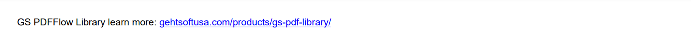

Adding Content to Paragraph
Brief
The article describes how to add content to a paragraph and configure it.
Details
The article Adding Paragraph describes how to add a paragraph to a section or to a repeating area and how to configure it.
You can add paragraphs and add text content to them using methods of ParagraphExtensions and
add inline images to them using methods of ImageExtensions.
You can add the following content to a paragraph:
Formatted text
URLs
Page numbers
Tabulations
Inline images
You can add formatted text, URLs, page numbers, and tabulations using corresponding methods of ParagraphExtensions
and configure font and background settings of these elements using methods of FormattedTextElementBuilder.
Formatted text
You can add a text to a paragraph using one of the AddText (return an instance of FormattedTextElementBuilder)
or AddTextToParagraph (return an instance of ParagraphBuilder) methods of the ParagraphExtensions class.
The methods allow you to specify the font and add a tabulation symbol if necessary.
URLs
You can add a URL to a paragraph using either AddUrl (returns an instance of FormattedTextElementBuilder)
or AddUrlToParagraph (returns an instance of ParagraphBuilder) method.
The methods allow you to specify a custom display text.
Page numbers
Page numbers are special fields that display the corresponding page numbers. To add a page number to a page, you should add it to a paragraph located in the necessary place on the page.
You can add a page number using one of the AddPageNumber (return an instance of FormattedTextElementBuilder)
or AddPageNumberToParagraph (return an instance of ParagraphBuilder) methods of the ParagraphExtensions class.
The methods allow you to specify a custom text displayed before the page number, the font, and the numbering offset.
By default, the page numbering starts from 1 and Arabic numbers are used.
You can set the number from which the page numbering should start and the numbering style used in a section using the
SectionBuilder.SetPageNumberStart and
SectionBuilder.SetNumerationStyle methods respectively.
Tabulations
You can add a tabulation symbol inside methods for adding text or using one of the methods for adding tabulation:
AddTabSymbol,
AddTabulation, or
AddTabulationInPercent.
For details on how to add tabulations, see the Adding Tabulations article.
Inline images
You can add an inline image to a paragraph using one of the AddInlineImage (return an instance of InlineImageBuilder)
or AddInlineImageToParagraph (return an instance of ParagraphBuilder) methods of ImageExtensions.
Settings of an inline image can be configured using methods of InlineImageBuilder.
For more information on adding and configuring images, see Adding Image.
Configuring Paragraph Content
You can configure font and background settings for particular text elements and URLs within a paragraph using methods of
FormattedTextElementBuilder.
In the following example, a paragraph with the blue background contains four elements, and the third element
has the red background:
SectionBuilder s = builder.AddSection();
ParagraphBuilder p = s.AddParagraph();
p.SetBackColor(Color.Blue);
p.SetFontColor(Color.White);
for (int i = 1; i <= 4; i++)
{
var textElement = p.AddText($"Paragraph element {i} ");
// The third element has a different background color
if (i == 3)
textElement.SetBackColor(Color.Red);
}
The above code will generate the following:
 See the document
See the document
If you do not specify formatting settings for a paragraph and its content items, they will have their default values defined by the default paragraph style.
You can create a style and apply it to a particular paragraph using the method ApplyStyle
or to all paragraph content items of the same type using the corresponding methods SetTextElementStyle,
SetUrlStyle,
SetPageNumberStyle,
and SetInlineImageStyle,
and to a particular content item using the method ApplyStyle.
For more on working with styles, see the article Formatting and Styles.
See also
Adding Paragraph
Adding Tabulations
Adding Image
Formatting and Styles
Examples
Example 1. Add a text with different font settings and background color [show]
Example 1. Add a text with different font settings and background color [hide]
DocumentBuilder.New()
.AddSection()
.AddParagraph().AddText("Underline text, ")
.SetUnderline(Stroke.Double, Color.Blue)
.ToParagraph().AddText("selected text.")
.SetBackColor(Color.Yellow)
.ToParagraph().AddText(" Formatted")
.SetBold()
.ToParagraph().AddText(" text.")
.SetFontColor(Color.Blue)
.ToDocument().Build("Result.pdf");
The above code will generate the following:
 See the document
See the document
Example 2. Add an URL [hide]
DocumentBuilder.New()
.AddSection()
.AddParagraph()
.AddTextToParagraph("GS PDFFlow Library learn more: ")
.AddUrl("https://gehtsoftusa.com/products/gs-pdf-library/")
.ToDocument().Build("Result.pdf");
The above code will generate the following:
 See the document
See the document
Example 3. Add an URL with a custom display text [show]
Example 3. Add an URL with a custom display text [hide]
DocumentBuilder.New()
.AddSection()
.AddParagraph()
.AddTextToParagraph("GS PDFFlow Library learn more: ")
.AddUrl("https://gehtsoftusa.com/products/gs-pdf-library/",
"gehtsoftusa.com/products/gs-pdf-library/")
.ToDocument().Build("Result.pdf");
The above code will generate the following:

See the document
Example 4. Add a page number to a paragraph [show]
Example 4. Add a page number to a paragraph [hide]
DocumentBuilder.New()
.AddSection()
.AddParagraph()
.AddTextToParagraph("Page: ")
.AddPageNumber()
.ToDocument().Build("Result.pdf");
The above code will generate the following:
See the document
Example 5. Add a page number with the numeration started from a specified number [show]
Example 5. Add a page number with the numeration started from a specified number [hide]
DocumentBuilder.New()
.AddSection()
.SetPageNumberStart(10)
.AddParagraph().AddPageNumber("Page: ")
.ToDocument().Build("Result.pdf");
The above code will generate the following:
 See the document
See the document
Example 6. Add a page number with a specified numbering style [show]
Example 6. Add a page number with a specified numbering style [hide]
DocumentBuilder.New()
.AddSection()
.SetNumerationStyle(NumerationStyle.UpperRoman)
.SetPageNumberStart(4)
.AddParagraph()
.AddTextToParagraph("Page: ")
.AddPageNumber()
.ToDocument().Build("Result.pdf");
The code above will generate the following:
See the document
Example 7. Add a page number with an offset [show]
Example 7. Add a page number with an offset [hide]
string text = "Some big paragraph of text ....";
DocumentBuilder.New()
.AddSection().SetSize(500, 250)
.AddParagraph()
.AddTextToParagraph("The number starts from the page +1.\n")
.AddPageNumberToParagraph("Page: ", 1)
.AddTextToParagraph(text + "\n")
.AddPageNumber("Page: ", 1)
.ToDocument().Build("Result.pdf");
The above code will generate the following:
 See the document
See the document
Example 8. Add content to a paragraph with applying a style [show]
Example 8. Add content to a paragraph with applying a style [hide]
//Set the path to the image file:
var imagePath = Path.Combine(System.Environment.CurrentDirectory,
"imageFile.png");
//Define the style:
var styleUrl = StyleBuilder.New()
.SetFontColor(Color.Blue)
.SetFontUnderline(Stroke.Solid, Color.Blue);
DocumentBuilder.New()
.AddSection()
.AddParagraph()
.SetUrlStyle(styleUrl)
.AddTextToParagraph("You can read more about PDFFlow at ")
.AddUrlToParagraph("https://gehtsoftusa.com/", "gehtsoftusa.com")
.AddTextToParagraph(" ")
.AddInlineImageToParagraph(imagePath, 20, 20, ScalingMode.None)
.AddText(".")
.ToDocument().Build("Result.pdf");
The above code will generate the following:
 See the document
See the document
back